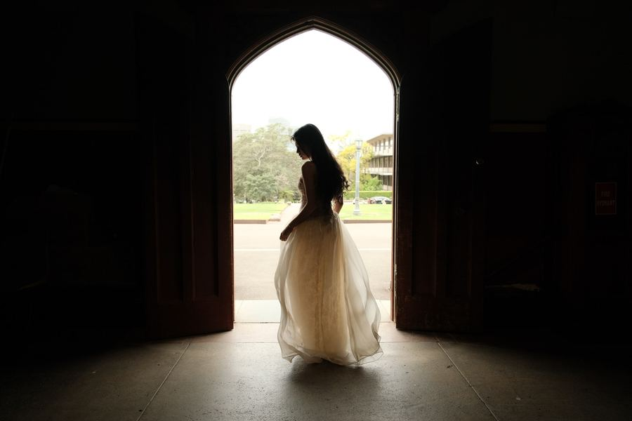
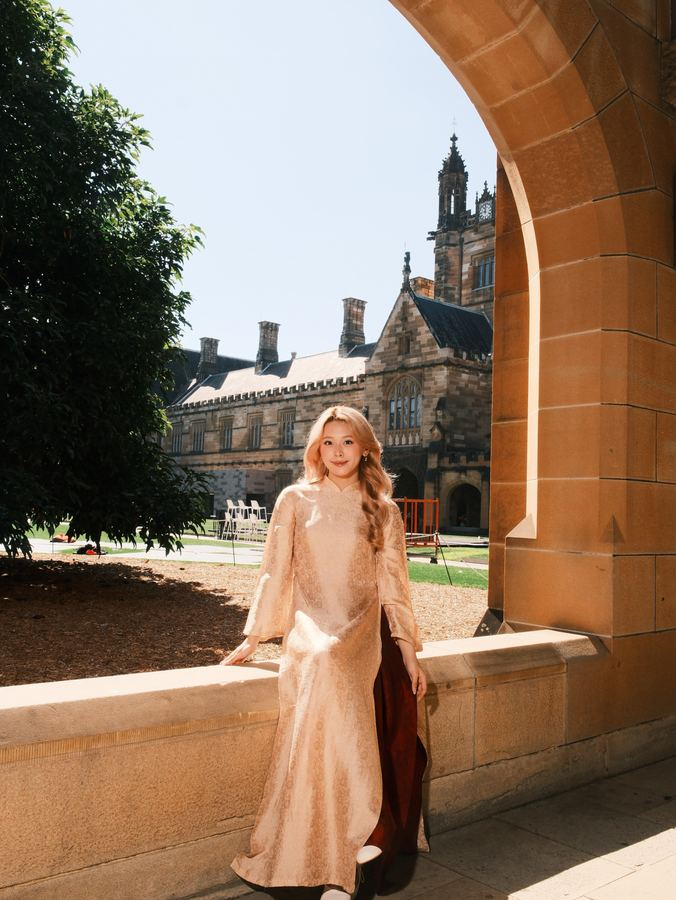
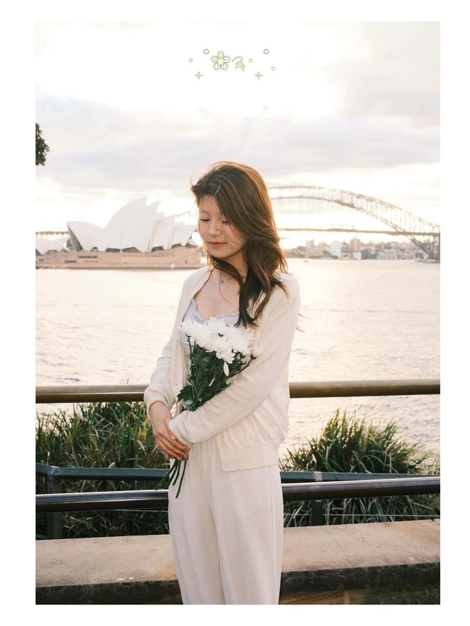
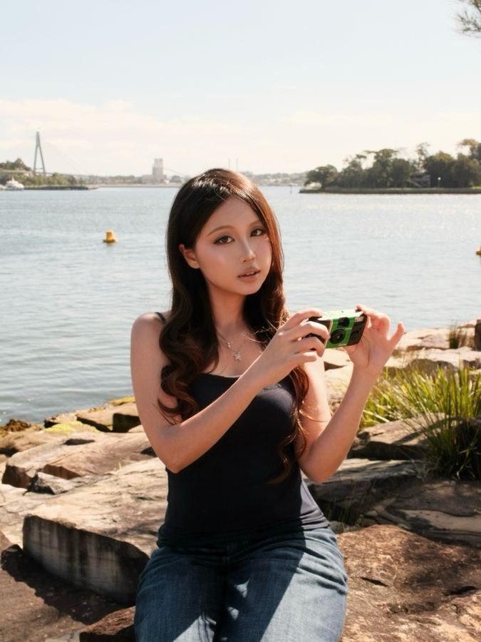
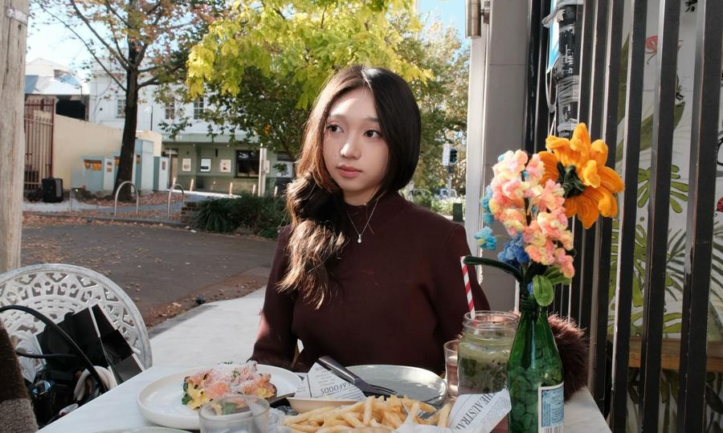
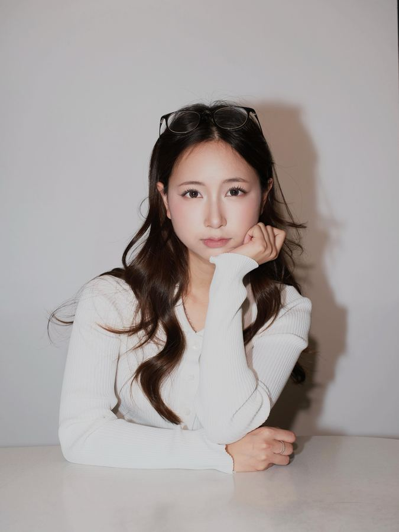

Work
Eight shoots, 33 photographs
-

Gothic Sydney 3 photos -

Áo dài in the Quadrangle The University of Sydney 3 photos - Graduation season The University of Sydney and around 8 photos
- Car park Sydney 4 photos
-

White by the harbour Sydney Harbour 4 photos -

Waterfront Sydney 4 photos -

Autumn afternoon Sydney 6 photos -

Studio Indoors 1 photo
Gothic
Sydney
A white gown, dark sandstone halls and the light from one open door.
3 photos
Áo dài in the Quadrangle
The University of Sydney
Traditional dress against the Quadrangle’s sandstone, shot in hard sun.
3 photos
Graduation season
The University of Sydney and around
Cap, gown and flowers. Graduation portraits on campus, with a few sets finished as title cards.
8 photos
Car park
Sydney
One shopping trolley, one level of underground parking and on-camera flash.
4 photos
White by the harbour
Sydney Harbour
White clothes, white flowers and late sun along the harbour foreshore.
4 photos
Waterfront
Sydney
Bright sun, sandstone blocks and the water behind.
4 photos
Autumn afternoon
Sydney
Low sun across café tables, park lawns and garden benches.
6 photos
Studio
Indoors
A plain white set and soft light.
1 photo
About
I’m Khoi Ngo, also known as Harry. I grew up in Vietnam and moved to Sydney to study Commerce at the University of Sydney, majoring in Digital Marketing and HR.
I started behind the camera on school media teams at Newton Grammar School, making photos, videos and livestreams for the school broadcasting page and the debate club, and leading media for the Fercaline rescue-pet project.
In Sydney I make content for the Vietnamese student community with SVAU and work as a marketing and social media intern. Most of my own work is portraits: graduates on campus, friends in áo dài, and concept shoots around the city, on digital and on film, plus video for different projects.
What I shoot
- Graduation portraits
- Áo dài and cultural portraits
- Editorial and concept shoots
- Film photography
- Video for projects
Media experience
- 2025 – nowMarketing and social media internExpert Education & Visa Services
- 2021 – 2022Vice director of mediaFercaline project
- 2021 – 2022Core mediaNBS, Newton school broadcasting page
- 2020 – 2022Vice core mediaNSBS, school debate club
Languages
- English and Tiếng Việt
Book a shoot
Send me the date, the place and what you have in mind. Graduation and portrait sessions around Sydney.